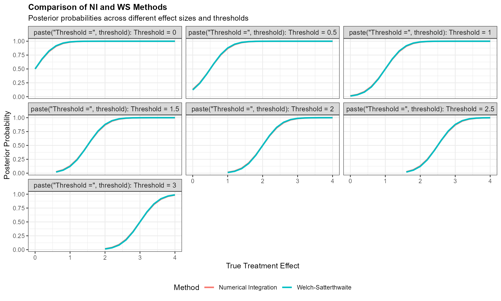
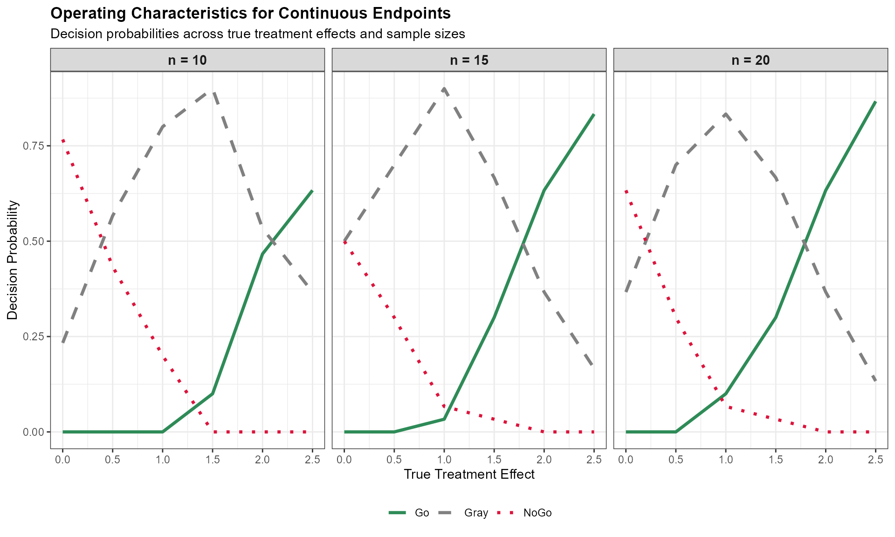

Bayesian Decision Making for Continuous Endpoints
Source:vignettes/continuous-endpoints.Rmd
continuous-endpoints.Rmd
library(BayesianQDM)
library(dplyr)
#>
#> Attaching package: 'dplyr'
#> The following objects are masked from 'package:stats':
#>
#> filter, lag
#> The following objects are masked from 'package:base':
#>
#> intersect, setdiff, setequal, union
library(tidyr)
library(ggplot2)Introduction
This vignette demonstrates Bayesian decision-making for continuous endpoints using the BayesianQDM package. Continuous endpoints (e.g., change in biomarker levels, symptom scores, or quality of life measures) are common in clinical trials and require different statistical approaches than binary endpoints.
Theoretical Background
Statistical Framework
For continuous endpoints, we assume: - Outcomes follow normal distributions with unknown means and variances - Prior distributions on parameters (Normal-Inverse-Chi-squared or vague priors) - Posterior distributions follow t-distributions
Calculation Methods
The package provides four computational approaches:
- NI (Numerical Integration): Exact calculation using convolution
-
WS (Welch-Satterthwaite): Fast approximation for
unequal variances
- MC (Monte Carlo): Simulation-based approach (not used in this vignette for speed)
- INLA: For external data incorporation (not used in this vignette for speed)
Basic Probability Calculations
Posterior Probability with Different Methods
Let’s compare the numerical integration (NI) and Welch-Satterthwaite (WS) methods:
# Sample data
sample_data <- list(
bar.y1 = 4.2, # Treatment group mean
bar.y2 = 2.1, # Control group mean
s1 = 1.5, # Treatment group SD
s2 = 1.3, # Control group SD
n1 = 15, # Treatment group size
n2 = 15 # Control group size
)
# Calculate posterior probability P(θ > 1.5) using different methods
theta0 <- 1.5
# Numerical Integration method
prob_ni <- BayesPostPredContinuous(
prob = 'posterior', design = 'controlled', prior = 'vague', CalcMethod = 'NI',
theta0 = theta0, n1 = sample_data$n1, n2 = sample_data$n2,
bar.y1 = sample_data$bar.y1, bar.y2 = sample_data$bar.y2,
s1 = sample_data$s1, s2 = sample_data$s2
)
# Welch-Satterthwaite approximation
prob_ws <- BayesPostPredContinuous(
prob = 'posterior', design = 'controlled', prior = 'vague', CalcMethod = 'WS',
theta0 = theta0, n1 = sample_data$n1, n2 = sample_data$n2,
bar.y1 = sample_data$bar.y1, bar.y2 = sample_data$bar.y2,
s1 = sample_data$s1, s2 = sample_data$s2
)
cat("Posterior P(θ > 1.5):\n")
#> Posterior P(θ > 1.5):
cat("NI method:", round(prob_ni, 4), "\n")
#> NI method: 0.8656
cat("WS method:", round(prob_ws, 4), "\n")
#> WS method: 0.8741
cat("Difference:", round(abs(prob_ni - prob_ws), 4), "\n")
#> Difference: 0.0085Conjugate Prior vs Vague Prior
Compare results using informative (Normal-Inverse-Chi-squared) vs vague priors:
# With Normal-Inverse-Chi-squared prior
prob_conjugate <- BayesPostPredContinuous(
prob = 'posterior', design = 'controlled', prior = 'N-Inv-Chisq', CalcMethod = 'NI',
theta0 = 2.0, n1 = 12, n2 = 12,
kappa01 = 5, kappa02 = 5, nu01 = 5, nu02 = 5,
mu01 = 3, mu02 = 1, sigma01 = sqrt(2), sigma02 = sqrt(2),
bar.y1 = 4.5, bar.y2 = 1.8, s1 = 1.2, s2 = 1.1
)
# With vague prior
prob_vague <- BayesPostPredContinuous(
prob = 'posterior', design = 'controlled', prior = 'vague', CalcMethod = 'NI',
theta0 = 2.0, n1 = 12, n2 = 12,
bar.y1 = 4.5, bar.y2 = 1.8, s1 = 1.2, s2 = 1.1
)
cat("Posterior P(θ > 2.0):\n")
#> Posterior P(θ > 2.0):
cat("Conjugate prior:", round(prob_conjugate, 4), "\n")
#> Conjugate prior: 0.8513
cat("Vague prior:", round(prob_vague, 4), "\n")
#> Vague prior: 0.9149Posterior Predictive Probability
Calculate the probability of future trial success:
# Posterior predictive probability for future trial
pred_prob <- BayesPostPredContinuous(
prob = 'predictive', design = 'controlled', prior = 'vague', CalcMethod = 'NI',
theta0 = 1.0, n1 = 12, n2 = 12, m1 = 100, m2 = 100,
bar.y1 = 3.2, bar.y2 = 1.5, s1 = 1.4, s2 = 1.2
)
cat("Posterior predictive P(future θ > 1.0):", round(pred_prob, 4))
#> Posterior predictive P(future θ > 1.0): 0.9987Go/NoGo/Gray Decision Making
Controlled Design with Posterior Probability
# Calculate decision probabilities using posterior probability
decision_result <- BayesDecisionProbContinuous(
nsim = 50, # Small nsim for vignette speed
prob = 'posterior',
design = 'controlled',
prior = 'N-Inv-Chisq',
CalcMethod = 'NI',
theta.TV = 2.0, # Go threshold
theta.MAV = 0.5, # NoGo threshold
theta.NULL = NULL, # Not needed for posterior probability
nMC = NULL, # Not needed for NI method
nINLAsample = NULL, # Not needed for NI method
gamma1 = 0.8, # Minimum probability for Go
gamma2 = 0.3, # Maximum probability for NoGo
n1 = 15, n2 = 15,
m1 = NULL, m2 = NULL, # Not needed for posterior probability
kappa01 = 3, kappa02 = 3, nu01 = 4, nu02 = 4,
mu01 = 2, mu02 = 1, sigma01 = 1.5, sigma02 = 1.5,
mu1 = 3.5, # True treatment mean
mu2 = 1.2, # True control mean
sigma1 = 1.3, # True treatment SD
sigma2 = 1.1, # True control SD
r = NULL, # Not needed for controlled design
ne1 = NULL, ne2 = NULL, alpha01 = NULL, alpha02 = NULL, # No external data
seed = 123
)
print(decision_result)
#> mu1 mu2 Go NoGo Gray
#> 1 3.5 1.2 0.2 0 0.8Uncontrolled Design
For single-arm studies comparing against historical control:
# Uncontrolled design decision making
uncontrolled_result <- BayesDecisionProbContinuous(
nsim = 50,
prob = 'predictive',
design = 'uncontrolled',
prior = 'vague',
CalcMethod = 'WS',
theta.TV = NULL, theta.MAV = NULL, # Not needed for predictive probability
theta.NULL = 1.5, # Threshold for future success
nMC = NULL, # Not needed for WS method
nINLAsample = NULL, # Not needed for WS method
gamma1 = 0.85,
gamma2 = 0.25,
n1 = 20,
m1 = 80, m2 = 80,
kappa01 = NULL, kappa02 = NULL, nu01 = NULL, nu02 = NULL, # Not needed for vague prior
mu01 = NULL, mu02 = 2.0, sigma01 = NULL, sigma02 = NULL, # Historical control mean
mu1 = 4.2, # True treatment mean
sigma1 = 1.6, # True treatment SD
r = 20, # Historical control precision parameter
ne1 = NULL, ne2 = NULL, alpha01 = NULL, alpha02 = NULL, # No external data
seed = 456
)
print(uncontrolled_result)
#> mu1 Go NoGo Gray
#> 1 4.2 0.44 0 0.56Method Comparison Visualization
# Compare NI and WS methods across different effect sizes
effect_sizes <- seq(0, 4, by = 0.2)
theta_values <- seq(0, 3, by = 0.5)
# Create comparison data
comparison_data <- expand.grid(
true_effect = effect_sizes,
threshold = theta_values
) %>%
filter(threshold <= true_effect + 1) %>% # Reasonable combinations only
rowwise() %>%
mutate(
prob_ni = BayesPostPredContinuous(
prob = 'posterior', design = 'controlled', prior = 'vague', CalcMethod = 'NI',
theta0 = threshold, n1 = 15, n2 = 15,
bar.y1 = true_effect + 1, bar.y2 = 1, s1 = 1.2, s2 = 1.1
),
prob_ws = BayesPostPredContinuous(
prob = 'posterior', design = 'controlled', prior = 'vague', CalcMethod = 'WS',
theta0 = threshold, n1 = 15, n2 = 15,
bar.y1 = true_effect + 1, bar.y2 = 1, s1 = 1.2, s2 = 1.1
),
difference = abs(prob_ni - prob_ws)
) %>%
ungroup()
# Visualization
method_plot <- comparison_data %>%
select(true_effect, threshold, prob_ni, prob_ws) %>%
pivot_longer(cols = c(prob_ni, prob_ws), names_to = "method", values_to = "probability") %>%
mutate(method = factor(method, levels = c("prob_ni", "prob_ws"),
labels = c("Numerical Integration", "Welch-Satterthwaite"))) %>%
ggplot(aes(x = true_effect, y = probability, color = method)) +
geom_line(linewidth = 1) +
facet_wrap(~ paste("Threshold =", threshold), labeller = label_both) +
theme_bw() +
labs(
title = "Comparison of NI and WS Methods",
subtitle = "Posterior probabilities across different effect sizes and thresholds",
x = "True Treatment Effect",
y = "Posterior Probability",
color = "Method"
) +
theme(
legend.position = "bottom",
strip.text = element_text(size = 10),
axis.title = element_text(size = 11),
plot.title = element_text(size = 12, face = "bold")
)
print(method_plot)
Operating Characteristics
Power and Type I Error Analysis
# Simulate operating characteristics across different scenarios
scenarios <- expand.grid(
true_diff = c(0, 0.5, 1.0, 1.5, 2.0, 2.5),
sample_size = c(10, 15, 20)
) %>%
rowwise() %>%
mutate(
decision = list(BayesDecisionProbContinuous(
nsim = 30, # Small for vignette speed
prob = 'posterior',
design = 'controlled',
prior = 'vague',
CalcMethod = 'WS',
theta.TV = 1.5,
theta.MAV = 0.5,
theta.NULL = NULL, # Not needed for posterior probability
nMC = NULL, # Not needed for WS method
nINLAsample = NULL, # Not needed for WS method
gamma1 = 0.8,
gamma2 = 0.3,
n1 = sample_size, n2 = sample_size,
m1 = NULL, m2 = NULL, # Not needed for posterior probability
kappa01 = NULL, kappa02 = NULL, nu01 = NULL, nu02 = NULL, # Not needed for vague prior
mu01 = NULL, mu02 = NULL, sigma01 = NULL, sigma02 = NULL, # Not needed for vague prior
mu1 = 2 + true_diff, mu2 = 2,
sigma1 = 1.5, sigma2 = 1.5,
r = NULL, # Not needed for controlled design
ne1 = NULL, ne2 = NULL, alpha01 = NULL, alpha02 = NULL, # No external data
seed = 789
))
) %>%
ungroup() %>%
unnest(decision)
# Summarize results
oc_summary <- scenarios %>%
group_by(true_diff, sample_size) %>%
summarise(
go_prob = mean(Go),
nogo_prob = mean(NoGo),
gray_prob = mean(Gray),
.groups = 'drop'
)
print(oc_summary)
#> # A tibble: 18 × 5
#> true_diff sample_size go_prob nogo_prob gray_prob
#> <dbl> <dbl> <dbl> <dbl> <dbl>
#> 1 0 10 0 0.767 0.233
#> 2 0 15 0 0.5 0.5
#> 3 0 20 0 0.633 0.367
#> 4 0.5 10 0 0.433 0.567
#> 5 0.5 15 0 0.3 0.7
#> 6 0.5 20 0 0.3 0.7
#> 7 1 10 0 0.2 0.8
#> 8 1 15 0.0333 0.0667 0.9
#> 9 1 20 0.1 0.0667 0.833
#> 10 1.5 10 0.1 0 0.9
#> 11 1.5 15 0.3 0.0333 0.667
#> 12 1.5 20 0.3 0.0333 0.667
#> 13 2 10 0.467 0 0.533
#> 14 2 15 0.633 0 0.367
#> 15 2 20 0.633 0 0.367
#> 16 2.5 10 0.633 0 0.367
#> 17 2.5 15 0.833 0 0.167
#> 18 2.5 20 0.867 0 0.133Visualization of Operating Characteristics
# Create operating characteristics plot
oc_plot <- oc_summary %>%
pivot_longer(cols = c(go_prob, nogo_prob, gray_prob),
names_to = "decision", values_to = "probability") %>%
mutate(
decision = factor(decision,
levels = c("go_prob", "gray_prob", "nogo_prob"),
labels = c("Go", "Gray", "NoGo")),
sample_size = factor(sample_size, labels = paste("n =", unique(sample_size)))
) %>%
ggplot(aes(x = true_diff, y = probability, color = decision, linetype = decision)) +
geom_line(linewidth = 1.2) +
facet_wrap(~ sample_size) +
theme_bw() +
scale_color_manual(
values = c('Go' = '#2E8B57', 'Gray' = '#808080', 'NoGo' = '#DC143C')
) +
scale_linetype_manual(
values = c('Go' = 'solid', 'Gray' = 'dashed', 'NoGo' = 'dotted')
) +
labs(
title = "Operating Characteristics for Continuous Endpoints",
subtitle = "Decision probabilities across true treatment effects and sample sizes",
x = "True Treatment Effect",
y = "Decision Probability",
color = "Decision",
linetype = "Decision"
) +
theme(
legend.position = "bottom",
legend.title = element_blank(),
strip.text = element_text(size = 11, face = "bold"),
axis.title = element_text(size = 11),
plot.title = element_text(size = 13, face = "bold")
)
print(oc_plot)
Advanced Features
Direct Probability Function Usage
For custom analyses, you can use the underlying probability functions directly:
# Direct use of t-distribution difference functions
mu1 <- 3.5; mu2 <- 1.2; sd1 <- 1.3; sd2 <- 1.1; nu1 <- 14; nu2 <- 14
# Compare methods for P(T1 - T2 > 2)
prob_ni_direct <- pNIdifft(q = 2, mu.t1 = mu1, mu.t2 = mu2,
sd.t1 = sd1, sd.t2 = sd2, nu.t1 = nu1, nu.t2 = nu2)
prob_ws_direct <- pWSdifft(q = 2, mu.t1 = mu1, mu.t2 = mu2,
sd.t1 = sd1, sd.t2 = sd2, nu.t1 = nu1, nu.t2 = nu2)
cat("Direct function usage - P(T1 - T2 > 2):\n")
#> Direct function usage - P(T1 - T2 > 2):
cat("NI method:", round(prob_ni_direct, 4), "\n")
#> NI method: 0.5669
cat("WS method:", round(prob_ws_direct, 4), "\n")
#> WS method: 0.5693Sensitivity Analysis for Priors
# Sensitivity analysis for different prior specifications
prior_specs <- list(
weak_informative = list(kappa01 = 1, kappa02 = 1, nu01 = 3, nu02 = 3),
moderate_informative = list(kappa01 = 5, kappa02 = 5, nu01 = 10, nu02 = 10),
strong_informative = list(kappa01 = 10, kappa02 = 10, nu01 = 20, nu02 = 20)
)
sensitivity_results <- purrr::map_dfr(names(prior_specs), function(prior_name) {
specs <- prior_specs[[prior_name]]
prob <- BayesPostPredContinuous(
prob = 'posterior', design = 'controlled', prior = 'N-Inv-Chisq', CalcMethod = 'NI',
theta0 = 1.5, n1 = 12, n2 = 12,
kappa01 = specs$kappa01, kappa02 = specs$kappa02,
nu01 = specs$nu01, nu02 = specs$nu02,
mu01 = 3, mu02 = 1, sigma01 = 1.5, sigma02 = 1.5,
bar.y1 = 3.8, bar.y2 = 1.6, s1 = 1.3, s2 = 1.2
)
tibble(prior_type = prior_name, posterior_prob = prob)
})
print(sensitivity_results)
#> # A tibble: 3 × 2
#> prior_type posterior_prob
#> <chr> <dbl>
#> 1 weak_informative 0.902
#> 2 moderate_informative 0.905
#> 3 strong_informative 0.916Practical Guidelines
When to Use Each Method
-
Numerical Integration (NI)
- Most accurate for posterior probabilities
- Recommended for final analyses
- Moderate computational cost
-
Welch-Satterthwaite (WS)
- Fast approximation
- Good for sensitivity analyses and simulations
- Handles unequal variances well
-
Monte Carlo (MC)
- Flexible but computationally intensive
- Use when other methods face convergence issues
- Provides uncertainty estimates
-
INLA
- Specialized for external data incorporation
- Fast approximate Bayesian inference
- Requires INLA package installation
Parameter Selection Guidelines
Threshold Selection
- θ_TV: Clinically meaningful difference (e.g., 1.5 × minimal clinically important difference)
- θ_MAV: Smallest worthwhile effect (e.g., 0.5 × minimal clinically important difference)
Summary
The BayesianQDM package for continuous endpoints provides:
- Multiple calculation methods with different accuracy-speed trade-offs
-
Flexible prior specifications for incorporating
existing knowledge
- Comprehensive decision frameworks with customizable thresholds
- Support for various designs including controlled, uncontrolled, and external control
- Operating characteristics evaluation for trial planning
This framework enables robust, evidence-based decision making in clinical trials with continuous endpoints while accounting for uncertainty and prior information.